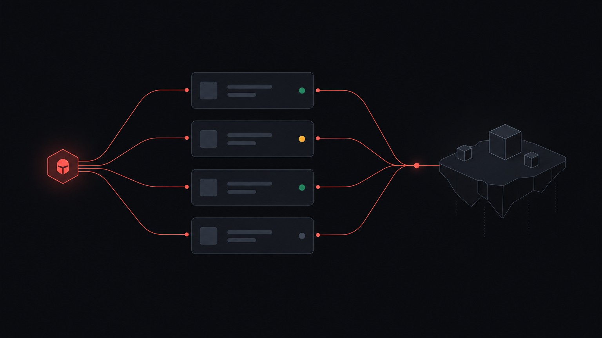

The arsenal
Not just Verse. The whole island.
Devices, UI, materials, VFX, cinematics, lighting, props, sound and the trailer. Each one is a skill with recipes that were proven in a live island first.
Specialist agents
Read-only auditors and helpers with one contract. Fan them out, fix one blocker at a time, loop until CLEAN.
verse-reviewerverse-concurrencyverse-gc-dataverse-persistenceverse-debuggerverse-architectverse-investigatoruefn-ui-wrapperigp-auditorblender-art-director
Editor over MCP
Place and wire devices, set @editables in batches of up to ~200 writes, save, read back. Recovery when UEFN hangs.
UI from a mockup
Mockup, WBP, MVVM bindings, Verse wrapper, animation. Layout checks before you ever open the widget.

3D pipeline
Blender props through a render and art-direction loop, measured to fit placed actors, exported with the exact import settings.
Performance
Profile the server tick, attribute the cost, fix with the playbook, prove it on the same tour.
World and VFX
Level layout and spawns, materials, Niagara, lighting and cutscenes, each with the cost measured before it ships.
Media
Concept art, game SFX auditioned by ear, clips and the Discover trailer cut from your recordings.